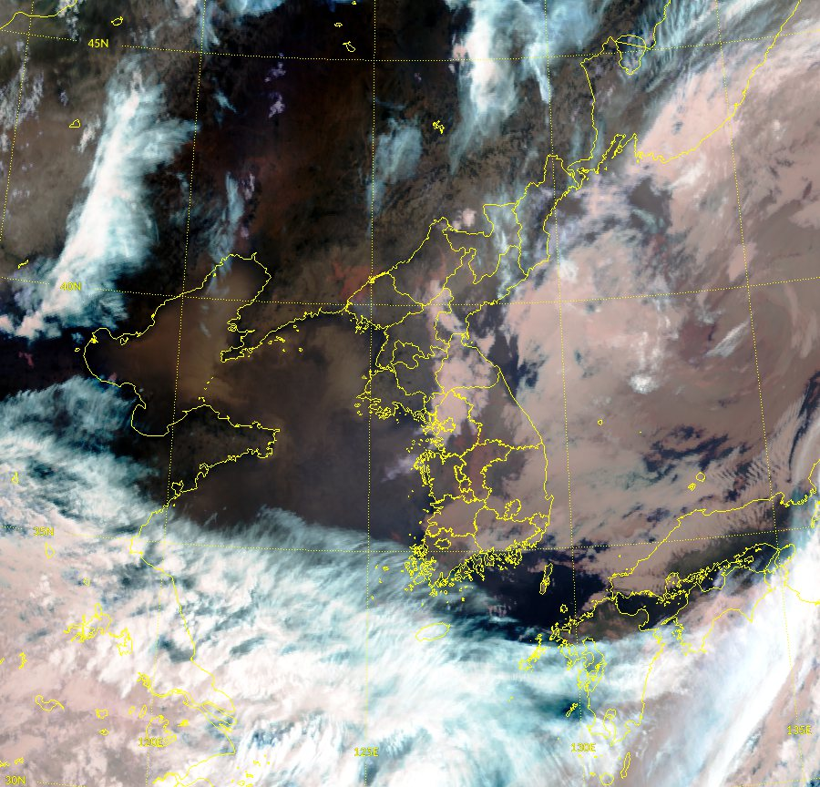
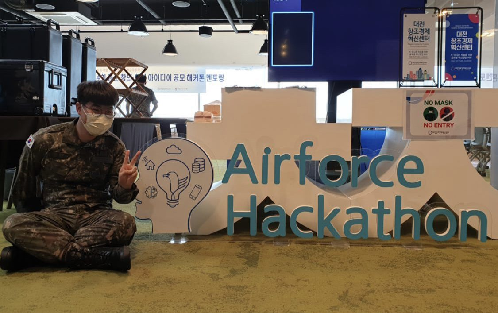

Republic of Korea Air Force Idea Hackathon

▲ GK2A day-night RGB composite over the Korean peninsula — the input our fog model read from.
Overview
Held during my mandatory Air Force service, where I was posted to the Weather Group — which is where the topic came from. With a civilian meteorologist and a fellow enlisted airman who had studied meteorology, our three-person team built a satellite-imagery-based fog-prediction model and won the Air Force Chief of Staff Award (Grand Prize), the top prize of the competition.
My role
The meteorology came from my two teammates; I was the only one on the technical side and built the entire AI / software pipeline end to end. It was my first AI / software competition — the start of the competition habit that followed.

▲ At the mentoring round.
Links
Press coverage (Daejeon Times, Korean, 7 Nov 2022) — our team 아이고하이고 taking the grand prize.